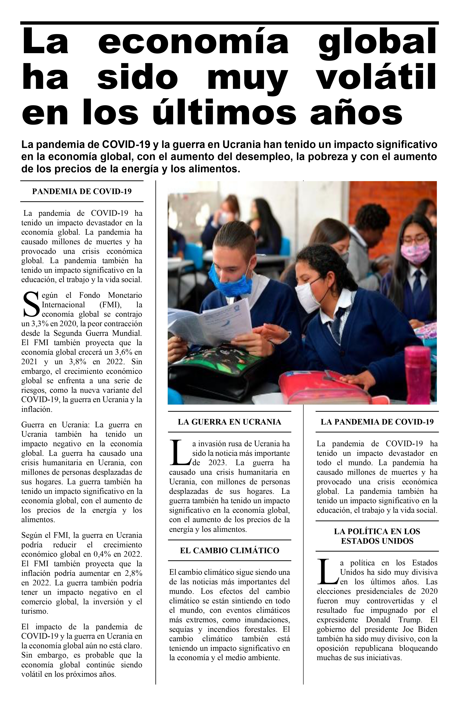

Diseño de Artículo Periodístico
Uso de columnas, letras capitales e imágenes
Objetivo de la Práctica
Replicar el diseño de una noticia o artículo de revista utilizando herramientas avanzadas de diseño de página en Word como columnas y letra capital.
Material de Trabajo
Instrucciones y Formatos Solicitados
1. Configuración de Página
- Tamaño de Hoja: Oficio (21.59 cm x 33.02 cm).
- Márgenes: 1 cm por los 4 lados.
- Borde de Página: Borde superior e inferior de 7 pto.
2. Diseño de Columnas
- Número de Columnas: 3 columnas de igual ancho.
- Espaciado: 1 cm entre columnas.
3. Formato de Texto
- Título del Artículo: Fuente Arial Black, tamaño 48, interlineado 0.7, alineación Justificada.
- Añade un Borde Superior con ancho de 4 1/2 pto y un espaciado de 1 pto (superior/inferior).
- Titular (Lead): Fuente Arial, tamaño 14, interlineado 1, Negrita, alineación Justificada.
- Cuerpo del texto: Fuente Times New Roman, tamaño 11, interlineado 1, alineación Justificada.
- Espaciado entre párrafos: 0 pto antes y 8 pto después.
4. Elementos Adicionales
- Letra Capital: Aplica una letra capital que ocupe 3 líneas de texto.
- Imagen: Inserta la imagen y ajusta su tamaño a 10.5 cm x 12.66 cm.
Entregable
Guarda el documento como P02-Articulo-TuNombre.docx.
Resultado Esperado
El diseño final debe seguir estas proporciones:
